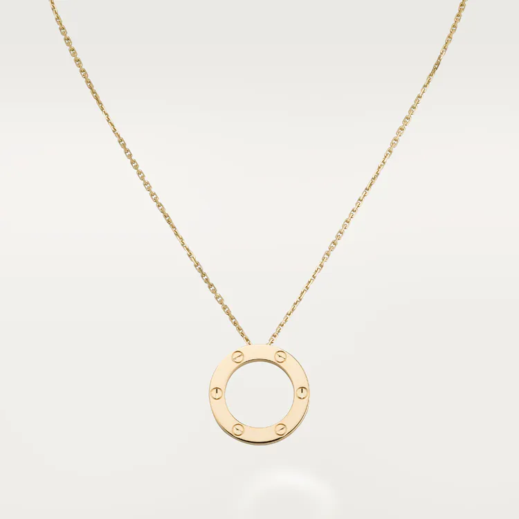
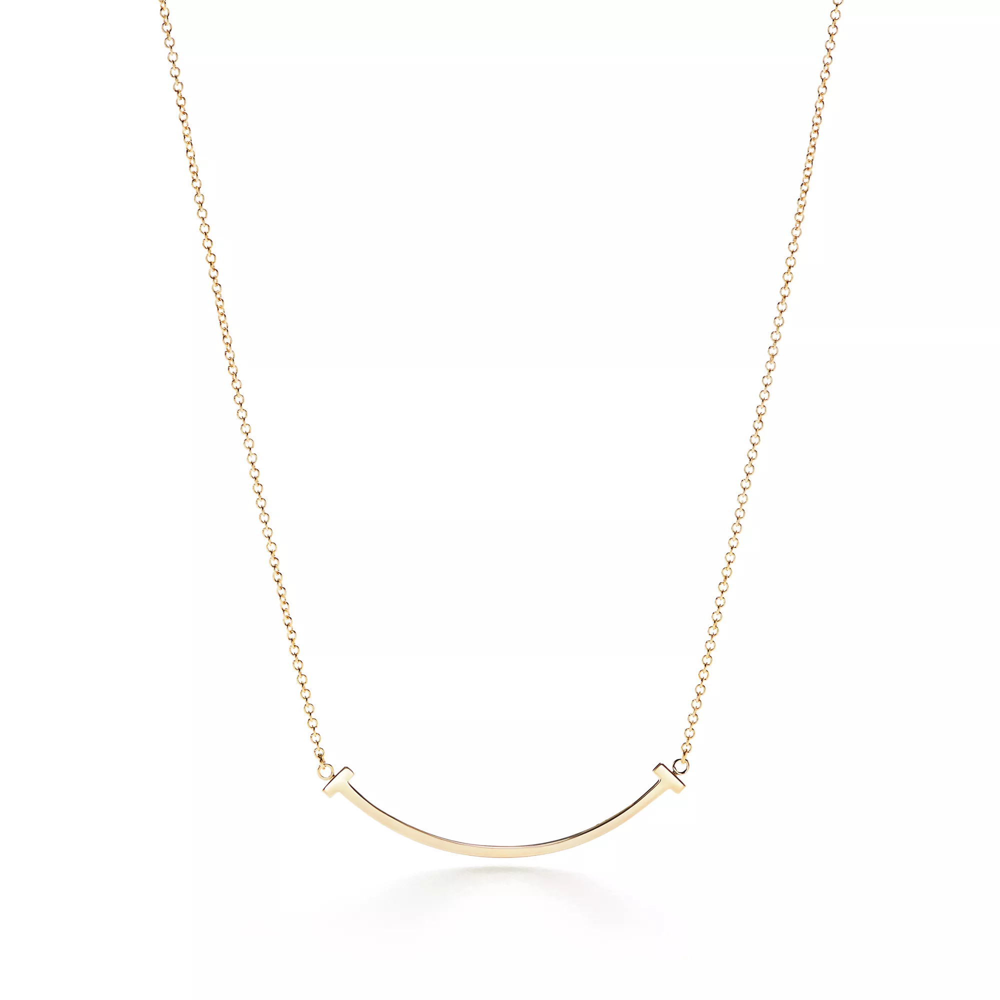
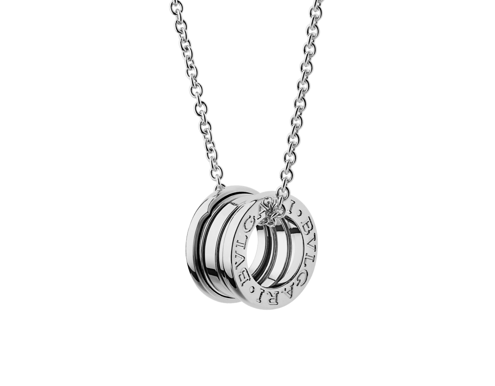
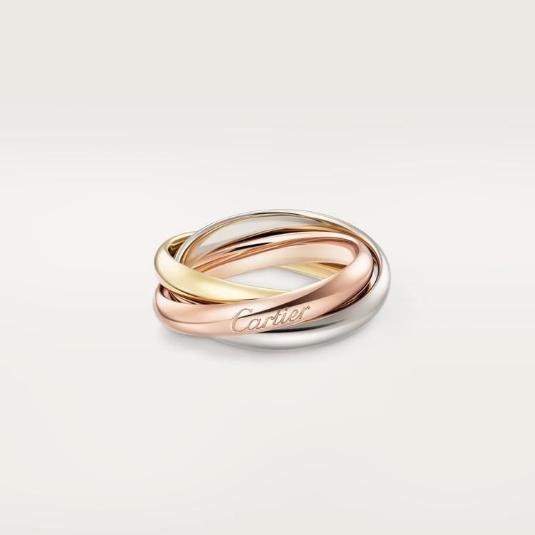
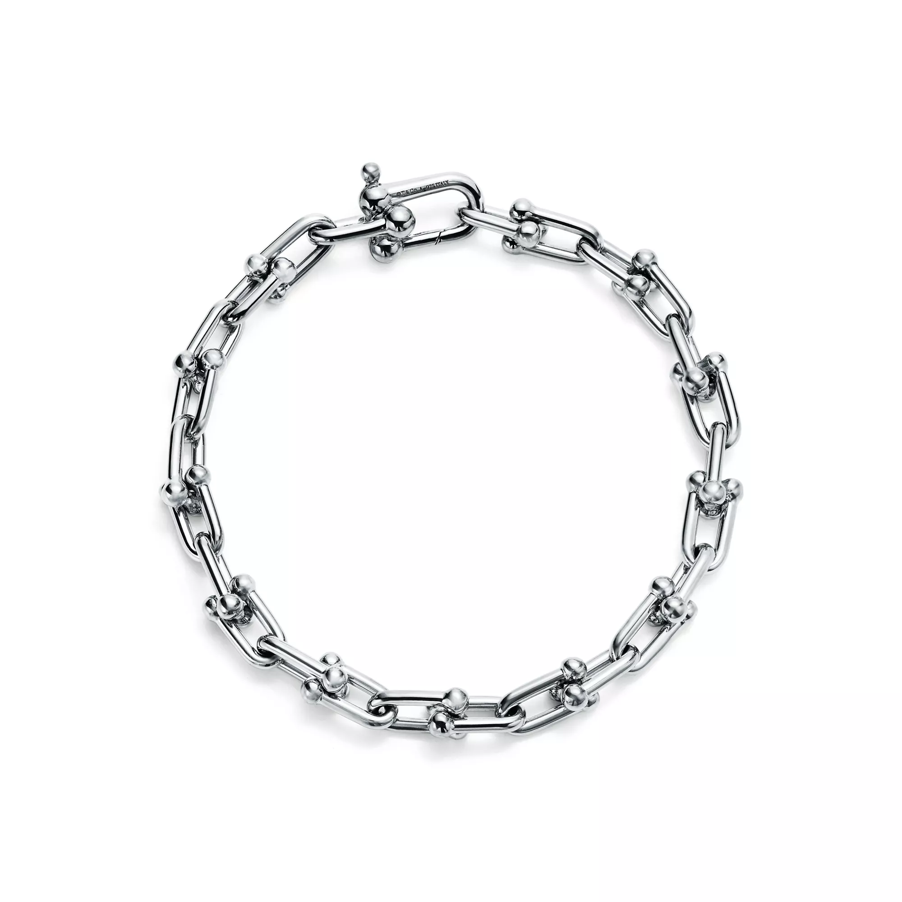
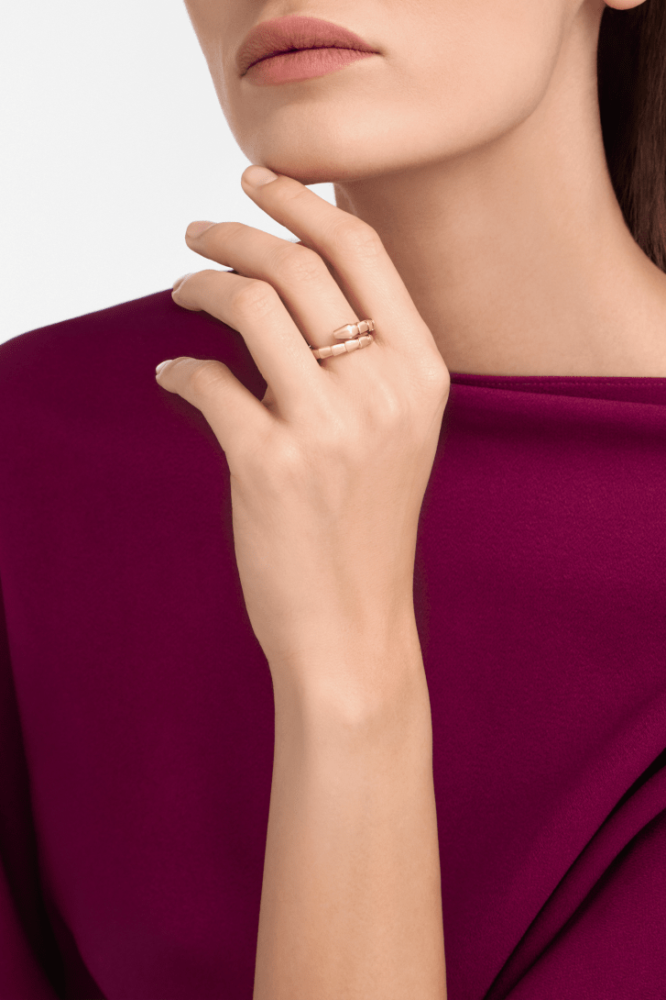

THE STYLE EDITCartier
LOVE pendant — yellow gold
A circle can be as expressive as a stone.
US$4,300Explore ↗
U.S. reference · before taxJEWELRY & ACCESSORIES
项链属于首饰。在这里，先按佩戴部位找到款式，再读材质、设计故事与美元参考价。
08 / PHOTOGRAPHED PIECES
从链条、吊坠到层叠珠链，读颈间的形状。

THE STYLE EDITA circle can be as expressive as a stone.

THE STYLE EDITThe Smile pendant treats a small gesture as the whole composition.

THE STYLE EDITB.zero1 rewards a view from the side.
07 / PHOTOGRAPHED PIECES
戒指、手链与耳饰是主角；经典档案另收录鞋履与墨镜。

THE STYLE EDITTrinity makes color and movement inseparable.

THE STYLE EDITA chain bracelet becomes especially engaging when its individual links have a clear identity.

THE STYLE EDITSerpenti Viper gives a familiar animal motif a disciplined, geometric rhythm.